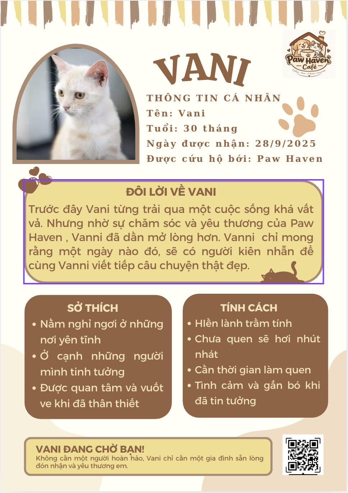
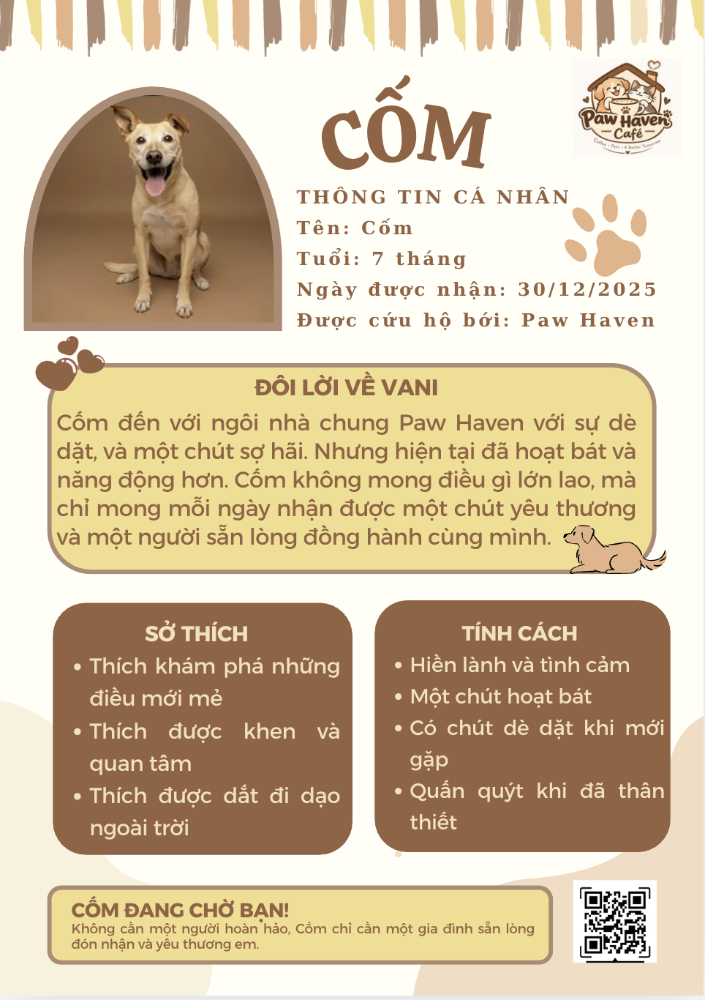

☕
Café & đồ ăn
Thưởng thức cà phê, trà, bánh và các món ăn nhẹ trong không gian ấm cúng, thân thiện.
Paw Haven Café là không gian cà phê thân thiện kết hợp cứu hộ động vật – nơi bạn gặp gỡ những người bạn bốn chân, lắng nghe câu chuyện của các bé và cùng lan tỏa sự tử tế.
Chúng mình tin rằng mỗi động vật đều xứng đáng được yêu thương và có một mái nhà an toàn. Paw Haven Café được xây dựng với mong muốn kết nối cộng đồng yêu thú cưng, tạo không gian thư giãn và góp phần hỗ trợ những bé động vật cần được chăm sóc.
Đến Paw Haven, bạn không chỉ thưởng thức đồ uống mà còn có thể hiểu hơn về hành trình hồi phục, chăm sóc và tìm gia đình mới cho các bé.
Tìm hiểu hoạt động của quán →Một mô hình kết hợp trải nghiệm cà phê, chăm sóc thú cưng và lan tỏa tinh thần cứu hộ có trách nhiệm.
Thưởng thức cà phê, trà, bánh và các món ăn nhẹ trong không gian ấm cúng, thân thiện.
Trải nghiệm tương tác có hướng dẫn, tôn trọng tính cách và giới hạn an toàn của từng bé.
Tìm hiểu câu chuyện của các bé và kết nối với quy trình nhận nuôi có trách nhiệm.
Dịch vụ lưu trú theo giờ hoặc theo ngày; có thể đăng ký thêm tắm, vệ sinh và grooming.
Góc quà lưu niệm và cửa hàng vật dụng thiết yếu dành cho những người bạn nhỏ.
Tiếp nhận đóng góp tự nguyện, công khai mục đích sử dụng và tri ân cộng đồng đồng hành.
Không gian được phân chia rõ ràng để đảm bảo trải nghiệm của khách hàng và sự an toàn, thoải mái của động vật.
Quầy pha chế, bàn ghế và khu vực thư giãn. Khu chế biến, phục vụ thức ăn được tách biệt với khu vực động vật.
Không gian gặp gỡ, vui chơi và chụp ảnh có nhân viên giám sát; hoạt động tùy theo trạng thái của từng bé.
Khu vực nghỉ ngơi, theo dõi và chăm sóc riêng, hạn chế làm phiền những bé đang hồi phục hoặc cần yên tĩnh.
Trưng bày quà lưu niệm, thức ăn, đồ chơi, phụ kiện và sản phẩm chăm sóc thú cưng.
Nơi lưu lại khoảnh khắc đáng nhớ và tìm hiểu thông tin về các bé đang chờ một gia đình phù hợp.
Khu vực riêng dành cho thú cưng khách gửi theo giờ hoặc theo ngày, có quy trình tiếp nhận và chăm sóc.
Mỗi bé có một cá tính và nhịp độ thích nghi riêng. Hãy đọc câu chuyện và tìm hiểu trước khi kết nối.

Trước đây Vani từng trải qua một cuộc sống khá vất vả. Nhờ sự chăm sóc và yêu thương của Paw Haven, bé đã dần mở lòng hơn. Vani mong có một người đủ kiên nhẫn để cùng viết tiếp câu chuyện thật đẹp.
Sở thích: Nằm nghỉ ở nơi yên tĩnh, ở cạnh người mình tin tưởng và được vuốt ve khi đã thân thiết.
Tính cách: Hiền lành, trầm tính, hơi nhút nhát khi chưa quen; cần thời gian làm quen và sẽ tình cảm khi đã tin tưởng.
Vani đang chờ bạn: Một gia đình sẵn lòng đón nhận và yêu thương bé.

Cốm đến với ngôi nhà chung Paw Haven với sự dè dặt và một chút sợ hãi. Hiện tại bé đã hoạt bát và năng động hơn. Cốm mong mỗi ngày nhận được một chút yêu thương và một người sẵn lòng đồng hành cùng mình.
Sở thích: Khám phá những điều mới mẻ, được khen và quan tâm, được dắt đi dạo ngoài trời.
Tính cách: Hiền lành, tình cảm, hơi dè dặt khi mới gặp và quấn quýt khi đã thân thiết.
Cốm đang chờ bạn: Một gia đình sẵn lòng đón nhận và yêu thương bé.
Thông tin hồ sơ được trích từ tài liệu giới thiệu do Paw Haven cung cấp. Vui lòng trao đổi trực tiếp với nhân viên để xác nhận tình trạng sức khỏe, tiêm phòng và khả năng tương thích trước khi nhận nuôi.
Vòng cổ giúp khách nhận biết hướng dẫn tiếp xúc. Luôn tuân theo nhân viên và không tự ý tiếp cận các bé.
Những bé từng trải qua tai nạn, bạo hành hoặc có biểu hiện sợ hãi, phòng vệ và có nguy cơ phản ứng nguy hiểm khi con người tiếp cận. Khách không được tự ý lại gần, chạm vào hoặc tương tác. Chỉ nhân viên được đào tạo mới tiếp xúc theo quy trình an toàn.
Những bé còn nhút nhát, chưa hoàn toàn tin tưởng con người hoặc cần thêm thời gian thích nghi. Khách có thể quan sát và chờ bé chủ động đến gần; không đuổi theo, ép bế hoặc cố gắng vuốt ve.
Những bé đã thích nghi tốt, có tính cách thân thiện và thoải mái khi tương tác. Khách có thể vui chơi, vuốt ve và chụp ảnh theo hướng dẫn của nhân viên.
Những bé chó, mèo thuộc sở hữu của khách hàng đang sử dụng dịch vụ lưu trú hoặc chăm sóc tại Paw Haven Café. Các bé được quản lý bằng hồ sơ riêng, không mặc định tham gia khu tương tác với khách khác.
“Yêu thương là hiểu biết. Sự hiểu biết là bảo vệ.”
Paw Haven mong mỗi bé tìm được gia đình phù hợp, an toàn và có trách nhiệm.
Đây là mẫu tham khảo phục vụ dự án và cần được rà soát, điều chỉnh theo quy trình thực tế, thông tin pháp lý và thỏa thuận cụ thể trước khi sử dụng chính thức.
Mỗi đóng góp tự nguyện đều có thể góp phần vào hành trình cứu hộ, chăm sóc, điều trị và nuôi dưỡng những người bạn nhỏ. Paw Haven hướng đến việc công khai các khoản tiếp nhận và mục đích sử dụng để cộng đồng cùng theo dõi.
Ghi nhận và gửi lời cảm ơn đến các cá nhân, tổ chức đã đồng hành. Người đóng góp có thể lựa chọn được vinh danh hoặc giữ kín danh tính.
“Không có sự tử tế nào là quá nhỏ.”
Paw Haven Café – nơi những cuộc gặp gỡ nhỏ có thể tạo nên điều tử tế lớn lao.
Thông tin địa chỉ, số điện thoại, email và mạng xã hội sẽ được cập nhật khi dự án chốt thông tin vận hành.